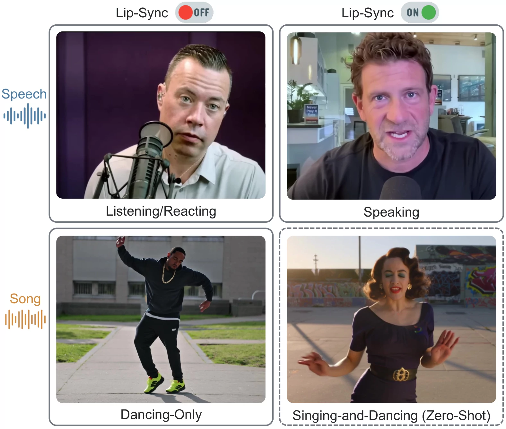
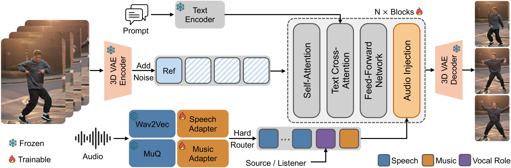

SingDance Compositional Zero-Shot Singing-and-Dancing Video Generation with Role-Aware Audio Conditioning
Explicit vocal roles compose articulation with music-aligned dance.
01 · Task Formulation
The voice has a role.
SingDance combines explicit vocal-role control with separate speech and music features extracted from audio, supporting four tasks in one model.

PDF ↗Abstract
Existing systems typically model either music-conditioned choreography or speech-driven articulation. SingDance brings both together for personalized video generation from a reference image, text prompt, and audio. A semantic vocal role controls whether the subject articulates the vocal as the Source or listens and reacts as the Listener, while task-defined routing composes speech, music, and role conditions.
Training learns vocal articulation and music-conditioned dance from separate supervision; their joint behavior is never used as a training target. Composing these capabilities at inference enables zero-shot singing-and-dancing with strong beat alignment, reliable role switching, visual fidelity, and competitive lip synchronization.
02 · Singing-and-Dancing
Same song. Different vocal role.
SingDance × S2V · Same image · Same song Vocal articulation ON / OFF
Note: Wan-S2V is native 16 fps and shown at 24 fps by frame repetition for side-by-side comparison.
03 · Vocal-Source Attribution
Role determines who speaks.
Same image · Same speech · Same action prompt Switch only the vocal role.
04 · Music Conditioning
Music token drives the beat.
GT · S2V · SingDance · SingDance w/o music token Remove the music token. Beat alignment weakens.
MusicInfuserText + Audio · No reference image
MusicInfuserText + Audio · No reference image
MusicInfuserText + Audio · No reference image
MusicInfuserText + Audio · No reference image
MusicInfuserText + Audio · No reference image
MusicInfuserText + Audio · No reference image
Note: Wan-S2V is native 16 fps and shown at 24 fps by frame repetition. MusicInfuser retains its native 30 fps and framing.
05 · Dance Variation
Same image. Different dance.
06 · Framework
SingDance Framework

Open vector PDF ↗07 · More Showcases